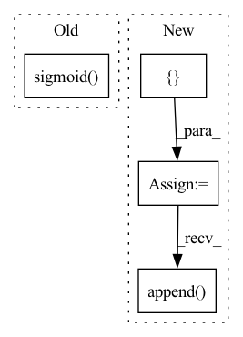

Pattern ID :1184

Before Change
:return:
items_embedding = self.item_embedding(torch.tensor([i for i in range(self.items_total)]).to(nodes_output.device))
alpha = torch.sigmoid(self.alpha)
embed = (1 - alpha) * items_embedding.clone() + alpha * nodes_output
return embed
After Change
id = 0
num_nodes = self.items_total
items_embedding = self.item_embedding(torch.tensor([i for i in range(self.items_total)]).to(nodes_output.device))
batch_embedding = []
for _ in range(batch_size):
output_node_features = nodes_output[id:id + num_nodes, :]
embed = (1 - self.alpha) * items_embedding
embed = embed + self.alpha * output_node_features
batch_embedding.append(embed)
id += num_nodes
batch_embedding = torch.stack(batch_embedding)
return batch_embedding
In pattern: SUPERPATTERN
Frequency: 4
Non-data size: 4
Instances
Fragment ID: 6010607
Project Name: benedekrozemberczki/pytorch_geometric_temporal
Commit Name: 6c36f8a6c545046914ce31c842b9648ac37c8b93
Time: 2021-07-24
Author: benedek.rozemberczki@gmail.com
File Name: torch_geometric_temporal/nn/attention/dnntsp.py
M Class Name: GlobalGatedUpdater
N Class Name: GlobalGatedUpdater
M Method Name: forward(2)
N Method Name: forward(2)
M Parent Class: nn.Module
N Parent Class: nn.Module
M File Name: torch_geometric_temporal/nn/attention/dnntsp.py
N File Name: torch_geometric_temporal/nn/attention/dnntsp.py
M Start Line: 84
M End Line: 87
N Start Line: 88
N End Line: 101
'>
Before Change
// Update gate of the GRU.
update_gate_conv = layers.SNConv2D(num_channels, self._kernel_size, sn_eps=self._sn_eps)
update_gate = F.sigmoid(update_gate_conv(xh))
// Gate the inputs.
gated_input = torch.cat([x, read_gate * prev_state], dim=1)
After Change
self.cell = ConvGRUCell(input_channels, output_channels, kernel_size, sn_eps)
def forward(self, x: torch.Tensor, hidden_state=None) -> torch.Tensor:
outputs = []
for step in range(x.size(1)):
// Compute current timestep
output, hidden_state = self.cell(x[:, step, :, :, :], hidden_state)
outputs.append(output)
// Stack outputs to return as tensor
outputs = torch.stack(outputs, dim=0)
return outputs
'>
Fragment ID: 6010610
Project Name: openclimatefix/skillful_nowcasting
Commit Name: b080785f5f559396d0b7e1a52d1c6d9a948d9439
Time: 2021-11-08
Author: jacob@bieker.tech
File Name: nowcasting_gan/layers/ConvGRU.py
M Class Name: ConvGRU
N Class Name: ConvGRU
M Method Name: forward(3)
N Method Name: forward(3)
M Parent Class: torch.nn.Module
N Parent Class: torch.nn.Module
M File Name: nowcasting_gan/layers/ConvGRU.py
N File Name: nowcasting_gan/layers/ConvGRU.py
M Start Line: 19
M End Line: 51
N Start Line: 70
N End Line: 78
'>
Before Change
edge_attr = self.explain_edges_with_loop(x, walks, ex_label)
mask = edge_attr
mask = self.control_sparsity(mask, kwargs.get("sparsity"))
mask = mask.sigmoid()
masks.append(mask.detach())
related_preds = self.eval_related_pred(x, edge_index, masks, **kwargs)
After Change
with self.connect_mask(self):
ex_labels = tuple(torch.tensor([label]).to(self.device) for label in labels)
edge_masks = []
hard_edge_masks = []
for ex_label in ex_labels:
edge_attr = self.explain_edges_with_loop(x, walks, ex_label)
edge_mask = edge_attr.detach()
valid_mask = (edge_mask != - math.inf)
edge_mask[edge_mask == - math.inf] = edge_mask[valid_mask].min() - 1 // replace the negative inf
edge_masks.append(edge_mask)
hard_edge_masks.append(self.control_sparsity(edge_attr, kwargs.get("sparsity")).sigmoid())
related_preds = self.eval_related_pred(x, edge_index, hard_edge_masks, **kwargs)
'>
Fragment ID: 6010609
Project Name: divelab/dig
Commit Name: d2838464a04282f7b1b6e3a98cdec42f3a3a29c7
Time: 2022-05-25
Author: haiyang@tamu.edu
File Name: dig/xgraph/method/gnn_gi.py
M Class Name: GNN_GI
N Class Name: GNN_GI
M Method Name: forward(3)
N Method Name: forward(3)
M Parent Class: WalkBase
N Parent Class: WalkBase
M File Name: dig/xgraph/method/gnn_gi.py
N File Name: dig/xgraph/method/gnn_gi.py
M Start Line: 69
M End Line: 121
N Start Line: 68
N End Line: 124
'>
Before Change
edge_attr = self.explain_edges_with_loop(x, walks, ex_label)
mask = edge_attr
mask = self.control_sparsity(mask, kwargs.get("sparsity"))
mask = mask.sigmoid()
masks.append(mask.detach())
related_preds = self.eval_related_pred(x, edge_index, masks, **kwargs)
After Change
with self.connect_mask(self):
ex_labels = tuple(torch.tensor([label]).to(self.device) for label in labels)
edge_masks = []
hard_edge_masks = []
for ex_label in ex_labels:
edge_attr = self.explain_edges_with_loop(x, walks, ex_label)
edge_mask = edge_attr.detach()
valid_mask = (edge_mask != -math.inf)
edge_mask[edge_mask == - math.inf] = edge_mask[valid_mask].min() - 1 // replace the negative inf
edge_masks.append(edge_mask)
hard_edge_masks.append(self.control_sparsity(edge_attr, kwargs.get("sparsity")).sigmoid())
related_preds = self.eval_related_pred(x, edge_index, hard_edge_masks, **kwargs)
'>
Fragment ID: 6010608
Project Name: divelab/dig
Commit Name: d2838464a04282f7b1b6e3a98cdec42f3a3a29c7
Time: 2022-05-25
Author: haiyang@tamu.edu
File Name: dig/xgraph/method/gnn_lrp.py
M Class Name: GNN_LRP
N Class Name: GNN_LRP
M Method Name: forward(3)
N Method Name: forward(3)
M Parent Class: WalkBase
N Parent Class: WalkBase
M File Name: dig/xgraph/method/gnn_lrp.py
N File Name: dig/xgraph/method/gnn_lrp.py
M Start Line: 68
M End Line: 205
N Start Line: 67
N End Line: 211